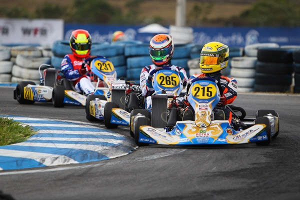
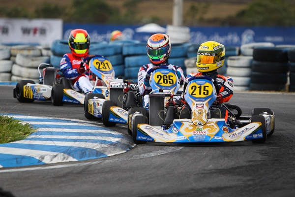
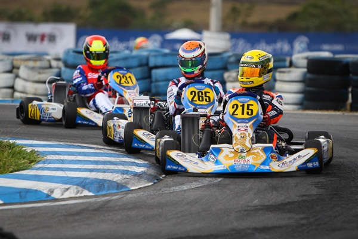

Karting is form of racing in a small four-wheel vehicle known as a go kart. In the beginning, the first-ever go kart was created in Los Angeles by Art Ingels in 1956. The first official organized race took place with several dozen home-built machines in 1957 in the parking lot of the famed Rose Bowl in Pasadena, California. Now, it has been estimated that over 1.6 billion people worldwide have raced go karts. Ingels’ one-off two-stroke creation was the inspiration for Duffy Livingstone and Roy Desbrow to start Go Kart Manufacturing, Co., Inc in 1958. The pair created their own versions of the go kart and then found inexpensive engines from the failed West Bend rotary lawn mower venture. Presently, karting continues to grow, especially the form known as indoor karting.
The go karts used at Pole Position Raceway feature the latest state-of-the-art technology. Our adult go karts produce an incredible 18 horsepower and have immediate throttle response. Simply put, they are the best indoor electric go karts in the world, and you'll see why they represent the future of our sport. We spent several million dollars on this technology because it offers the best performance, produces no smelly fumes, and allows us to maintain the most-consistent fleet of karts in the United States. We are able to electronically tune each kart so that performance is nearly identical and measurable - something you can't do with gas technology in the world of indoor karting. The end result at Pole Position Raceway is an adrenaline-filled ride and the ultimate racing experience.
The race tracks at Pole Position Raceway were created by a team of highly trained professionals. The surface texture of Pole Position Raceway tracks is somewhere in between the “slick tracks” and asphalt tracks of the past, as the goal was to create a race track surface that is fun for an entry-level driver and yet challenging for the seasoned professional. The race track design has received a stamp of approval from NASCAR Champion Kurt Busch and Supercross Champion Jeremy McGrath, along with NASCAR reporter Jamie Little and freestyle motocross star Mike Metzger. Pole Position Raceway has taken this surface preparation technique into some of the world’s largest karting venues, using oversize buildings that are as large as 85,000 square feet. This allows for race tracks that are wide, fast and require passing techniques.

Indoor karting combines the thrill of regular racing with the comfort of climate control. Up to a dozen drivers race on a course at one time, and racers either compete for the single-fastest lap time or in head-to-head action. Pole Position Raceway offers a wide variety of race formats and the typical race lasts about 10 minutes. We also offer group event packages that come in two- and three-race formats, such as the Pole Position Challenge, the Grand Prix, and the infamous four-race Super Pole.
Created by||Lahiru Sandaruwan